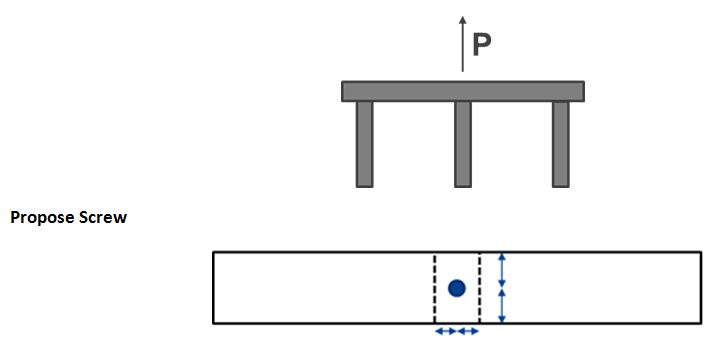
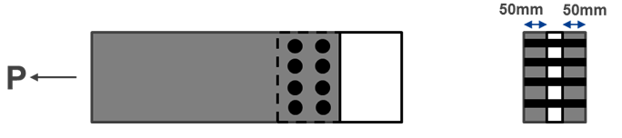

What is the difference between Type 1 and Type 2 connections?
Type 1 connections occur where the fastener is in while Type 2 connections occur where the fastener is in .
What three things should you consider when detailing connections?
When measuring edge distances, what part of the fastener do you measure to?
When measuring edge distances, you measure to the of the fastener
What does the D stand for in JD3?
The D means that the timber element being connected in .
How do nails, screws and bolts get their strength? (select from the list below)
Nails get their strength from
Screws get their strength from
Bolts get their strength from
.
In what direction is a row of fasteners defined?
A row of fasteners is defined as being to the direction of force.
How does the design of coach screws differ from bolts?
Coach screws are designed
for type 1 connections
and as screws
for type 2 connections.
A single steel screw is used to connect a 90 × 45 seasoned imported softwood top plate to 90 × 45 seasoned imported softwood studs. This screw is required to withstand an ultimate load of 500 N. Choose an appropriate screw considering edge distances. The screw is manufactured to maximum tensile capacity.

Considering edge distances, the governing edge distance is from the centre of the screw to the
of the stud. Since the stud if 45mm wide;
45 mm / 2 >
, therefore D < mm. (AS1720 - Table 4.8)
Hence choose Screw size
with shank diameter D =
mm
Choose
mm long screw, with a penetration length of
mm in both top plane and stud.
The load direction creates a Type
Capacity Factor: φ =
(AS1720.0 – Table 2.1)
Grain Orientation Factor: k13,side =
Grain Orientation Factor: k13,end =
(AS1720.0 – Clause 4.3.3.2)
Joint Group
(AS1720.0 – Table H2.4)
Consider
grain as worst case
Withdrawal Strength Qk = N/mm per penetration length per screw (AS1720.0 – Table 4.6(B))
Tensile Strength of Screw Nd,ts = kN (AS1720.0 – Table 4.7)
Tensile Capacity
φk13IpnQk = kN
nNd,ts = N
Nt,d,2 = N,
which is
than 500 N, therefore,
Therefore, Size 8, 90 mm steel screw is
to connect top plate to stud.
Assess the capacity of the 8 M12 bolts connecting an unseasoned imported softwood timber member to an internal steel plate under the following load P(duration < 5 days) = 30 kN

The load direction creates a Type
connection
Capacity Factor: φ =
(AS1720.0 – Table 2.1)
Duration of Load Factor: k1 =
(AS1720.0 – Table G1)
Head Fixity Factor: k16 =
(AS1720.0 – Clause 4.4.3.2)
Now given the connection created by the 8 bolts, it can be assumed that bolts provide
to shrinkage of the timber.
Multiple Fasteners Factor: k17 =
(AS1720.0 – Table 4.12)
Joint Group
(AS1720.0 – Table H2.4)
Now given internal steel plate, we have a three-member joint configuration where
beff = mm and Qsk =
Qkl, (AS1720.0 Table 4.9(A))
Qkl = kN (AS1720.0 – Table 4.9(B))
Nt,d,1 = N,
which is
than 30 kN, therefore,
Therefore 8 M12 bolts is
What are the six hazard classes for timber?
H1:
H2:
H3:
H4:
H5:
H6:
When timber elements are hidden, how can you protect for durability?
When timber elements are hidden you can reduce the risk of rot in the timber due to moisture by
and reduce the risk of termite attack by
| Concrete slabs | Timber Flooring | Steel Capping |
| Crushed Stone | Sand | Stainless Steel Mesh |
| High Moisture Soil | Hand Sprayed Chemicals | Reticulation System |
| Geothermal Heating |